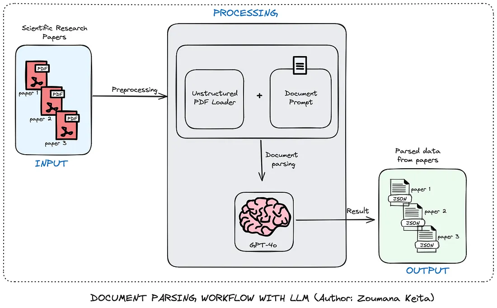
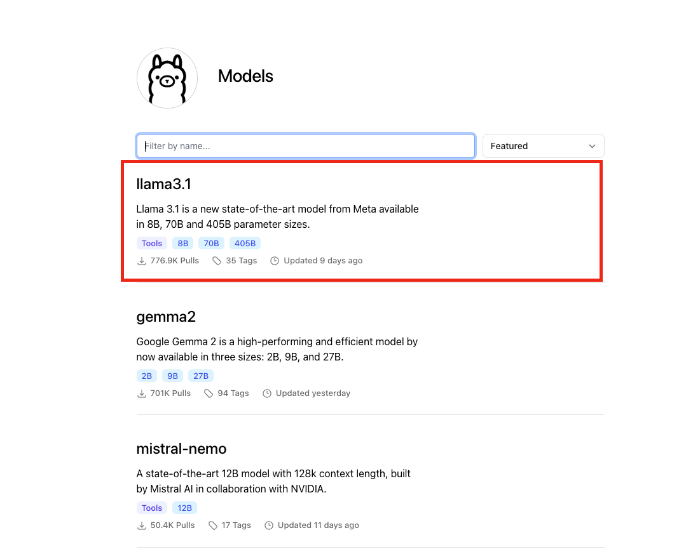
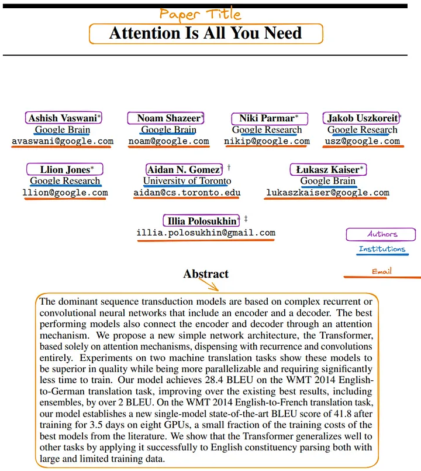
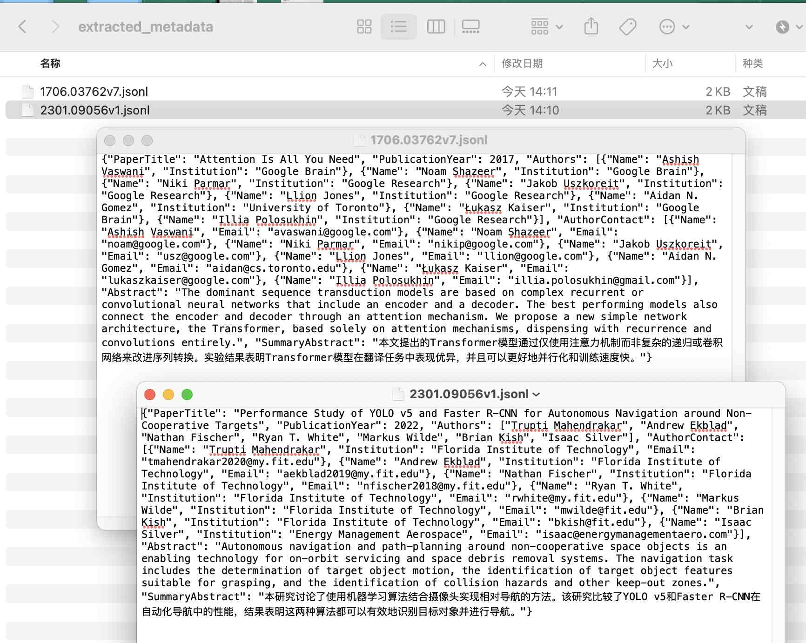

非结构文本、图片、视频等数据是待挖掘的数据矿藏， 在经管、社科等研究领域中谁拥有了从非结构提取结构化信息的能力，谁就拥有科研上的数据优势。正则表达式是一种强大的文档解析工具，但它们常常难以应对现实世界文档的复杂性和多变性。而随着chatGPT这类LLM的出现，为我们提供了更强大、更灵活的方法来处理多种类型的文档结构和内容类型。
为方便理解和实验，今天再新增一个案例，即论文处理的场景为例
一、任务
从海量的论文pdf文件中批量提取出
- 论文标题
- 出版年份
- 作者
- 联系作者
- 抽象的
- 摘要
1.1 为何选择LLM，而不是正则表达式
在灵活性、上下文理解能力、维护和可扩展性三方面， 我们对比一下LLM和正则表达式
| 方面 | LLM | 正则表达式 |
|---|---|---|
| 灵活性 | 能够自动理解和适应各种文档结构，并且无论位于文档的什么位置，都能够识别相关信息。 | 需要每个文档结构都有特定的模式，当给定的文档偏离预期的格式时就会失败。 |
| 上下文理解 | 对每个文档的含义有细致的理解，从而可以更准确地提取相关信息。 | 无需理解上下文或含义即可匹配模式。 |
| 维护和可扩展性 | 可以轻松适应新的文档类型，只需在初始提示中进行最少的更改，从而使其更具可扩展性。 | 需要随着文档格式的变化而不断更新。添加对新类型信息的支持需要编写一个全新的正则表达式。 |
综上， 选择LLM更适合做「从论文PDF中提取信息」这一任务。
1.2 工作流程
为了方便实验，让我们以论文处理的场景为例，下图是使用LLM批量提取论文中元信息的工作流程。

工作流程总体上有三个主要组成部分：输入、处理和输出。
- 首先，提交文件（在本例中为PDF格式的科研论文）进行处理。
- 处理组件的第一个模块从每个 PDF 中提取原始数据，并将其与包含大型语言模型指令的提示相结合，以有效地提取数据。
- 然后，大型语言模型使用提示来提取所有元数据。
- 对于每个PDF，最终结果以JSON格式保存，可用于进一步分析。
二、准备工作
2.1 安装ollama
点击前往网站 https://ollama.com/ ，下载ollama软件，支持win、Mac、linux

2.2 下载LLM
ollama软件目前支持多种大模型， 如阿里的（qwen、qwen2）、meta的(llama3、llama3.1)， 本文选择最近新出的模型 llama3.1

以llama3.1为例，根据自己电脑显存性能， 选择适宜的版本。如果不知道选什么，那就试着安装，不合适不能用再删除即可。

打开电脑命令行cmd(mac是terminal), 网络是连网状态，执行模型下载(安装)命令
ollama pull llama3.1
等待 llama3.1:8b 下载完成。
2.3 安装python包
在python中调用ollama服务，需要ollama包。
打开电脑命令行cmd(mac是terminal), 网络是连网状态，执行安装命令
pip3 install ollama
2.4 启动ollama服务
在Python中调用本地ollama服务，需要先启动本地ollama服务， 打开电脑命令行cmd(mac是terminal), 执行
ollama serve
Run
2024/08/03 14:52:24 routes.go:1011: INFO server config env="map[OLLAMA_DEBUG:false OLLAMA_FLASH_ATTENTION:false OLLAMA_HOST:http://127.0.0.1:11434 OLLAMA_KEEP_ALIVE: OLLAMA_LLM_LIBRARY: OLLAMA_MAX_LOADED_MODELS:1 OLLAMA_MAX_QUEUE:512 OLLAMA_MAX_VRAM:0 OLLAMA_MODELS:/Users/deng/.ollama/models OLLAMA_NOHISTORY:false OLLAMA_NOPRUNE:false OLLAMA_NUM_PARALLEL:1 OLLAMA_ORIGINS:[http://localhost https://localhost http://localhost:* https://localhost:* http://127.0.0.1 https://127.0.0.1 http://127.0.0.1:* https://127.0.0.1:* http://0.0.0.0 https://0.0.0.0 http://0.0.0.0:* https://0.0.0.0:* app://* file://* tauri://*] OLLAMA_RUNNERS_DIR: OLLAMA_TMPDIR:]"
time=2024-08-03T14:52:24.742+08:00 level=INFO source=images.go:725 msg="total blobs: 18"
time=2024-08-03T14:52:24.742+08:00 level=INFO source=images.go:732 msg="total unused blobs removed: 0"
time=2024-08-03T14:52:24.743+08:00 level=INFO source=routes.go:1057 msg="Listening on 127.0.0.1:11434 (version 0.1.44)"
time=2024-08-03T14:52:24.744+08:00 level=INFO source=payload.go:30 msg="extracting embedded files" dir=/var/folders/y0/4gqxky0s2t94x1c1qhlwr6100000gn/T/ollama4239159529/runners
time=2024-08-03T14:52:24.772+08:00 level=INFO source=payload.go:44 msg="Dynamic LLM libraries [metal]"
time=2024-08-03T14:52:24.796+08:00 level=INFO source=types.go:71 msg="inference compute" id=0 library=metal compute="" driver=0.0 name="" total="72.0 GiB" available="72.0 GiB"
cmd(mac是terminal)看到如上的信息，说明本地ollama服务已开启。
三、实验
3.1 代码结构
点击下载本文 实验代码
project
|
- Extract_Metadata_With_Large_Language_Models.ipynb
- prompts
|--- scientific_papers_prompt.txt
- data
|--- 1706.03762v7.pdf
|--- 2301.09056v1.pdf
- extracted_metadata/
- project文件夹 是根文件夹，包含 ipynb代码文件、 prompts文件夹、data文件夹、extracted_metadata文件夹
- prompts文件夹 有txt文件格式的提示信息
- data文件夹 存储着实验论文pdf数据
- extracted_metadata文件夹 目前为空，将存储从论文pdf中提取的元信息，以 json 文件格式存储
3.2 提示工程
我们需要从论文pdf中提取
- 论文标题
- 出版年份
- 作者
- 联系作者
- 抽象的
- 摘要
这是我设计的提示， 该提示存储在 prompts/scientific_papers_prompt.txt 中。
科学研究论文：
---
{document}
---
您是分析科学研究论文的专家。 请仔细阅读上面提供的研究论文，并提取以下关键信息：
从研究论文中提取以下六 (6) 个属性：
- 论文标题：研究论文的全名
- 出版年份：论文发表的年份
- 作者：论文所有作者的全名
- 作者联系方式：字典列表，其中每个字典包含每个作者的以下键：
- 姓名：作者的全名
- 机构：作者的机构隶属关系
- 电子邮件：作者的电子邮件地址（如果提供）
- 摘要：论文摘要的全文
- 摘要总结：用 2-3 句话简洁地总结摘要，突出重点
指南：
- 提取的信息应属实，并准确无误。
- 除摘要外，应极其简洁，摘要应完整复制。
- 提取的实体应该是独立的，并且不需要论文的其余部分就能轻松理解。
- 如果论文中缺少任何属性，请将该字段留空，而不是猜测。
- 对于摘要总结，重点介绍研究的主要目标、方法和主要发现。
- 对于作者联系方式，请为每个作者创建一个条目，即使缺少一些信息。如果没有提供作者的电子邮件或机构，请在字典中将该字段留空。
以 JSON 格式回答。 JSON 应包含 6 个键："PaperTitle", "PublicationYear", "Authors", "AuthorContact", "Abstract", "SummaryAbstract"。 "AuthorContact"字段应该是字典列表格式。
3.2 提取信息
读取 data/1706.03762v7.pdf， 提取该论文首页中感兴趣的6个信息，如

%%time
import ollama
import cntext as ct
#cntext版本为2.1.2，非开源， #需联系大邓372335839获取
#我们感兴趣的信息在论文的第一页，所以这里粗糙的选择前4000个字符。
paper_content = ct.read_pdf('data/1706.03762v7.pdf')[:4000]
prompt_content = open('prompts/scientific_papers_prompt.txt', encoding='utf-8').read()
response = ollama.chat(model='llama3.1:8b',
messages = [
{'role': 'system', 'content': prompt_content},
{'role': 'user', 'content': paper_content}
])
result = response['message']['content']
result = eval(result.split('```\n')[1].split('\n```')[0])
result
Run
CPU times: user 3.5 ms, sys: 2.13 ms, total: 5.63 ms
Wall time: 11.8 s
{'PaperTitle': 'Attention Is All You Need',
'PublicationYear': 2017,
'Authors': ['Ashish Vaswani',
'Noam Shazeer',
'Niki Parmar',
'Jakob Uszkoreit',
'Llion Jones',
'Aidan N. Gomez',
'Łukasz Kaiser',
'Illia Polosukhin'],
'AuthorContact': [{'Name': 'Ashish Vaswani',
'Institution': 'Google Brain',
'Email': 'avaswani@google.com'},
{'Name': 'Noam Shazeer',
'Institution': 'Google Brain',
'Email': 'noam@google.com'},
{'Name': 'Niki Parmar',
'Institution': 'Google Research',
'Email': 'nikip@google.com'},
{'Name': 'Jakob Uszkoreit',
'Institution': 'Google Research',
'Email': 'usz@google.com'},
{'Name': 'Llion Jones',
'Institution': 'Google Research',
'Email': 'llion@google.com'},
{'Name': 'Aidan N. Gomez',
'Institution': 'University of Toronto',
'Email': 'aidan@cs.toronto.edu'},
{'Name': 'Łukasz Kaiser',
'Institution': 'Google Brain',
'Email': 'lukaszkaiser@google.com'},
{'Name': 'Illia Polosukhin',
'Institution': '',
'Email': 'illia.polosukhin@gmail.com'}],
'Abstract': 'The dominant sequence transduction models are based on complex recurrent or convolutional neural networks that include an encoder and a decoder. The best performing models also connect the encoder and decoder through an attention mechanism. We propose a new simple network architecture, the Transformer, based solely on attention mechanisms, dispensing with recurrence and convolutions entirely.',
'SummaryAbstract': '本文提出了一种新的Transformer模型，基于注意力机制，抛弃了递归和卷积等复杂方法。该模型在机器翻译任务上表现出优异的效果，并且可以更好地并行化和训练。'}
从运行结果看， 摘要Abstract 的提取不够准确，有一定的遗漏。
3.3 封装成函数extract_info
实验成功，我们将其封装为函数extract_info ，因为LLM返回的内容的格式存在不确定性， 所以为了保证函数尽可能的成功的运行出结果，这里我设置了异常处理机制。
import ollama
import cntext as ct
#cntext版本为2.1.2，非开源， #需联系大邓372335839获取
def extract_info(paper_content, prompt_content, max_retries=3):
for attempt in range(max_retries + 1):
try:
response = ollama.chat(
model='llama3.1:8b',
messages=[
{'role': 'system', 'content': prompt_content},
{'role': 'user', 'content': paper_content}
]
)
result = response['message']['content']
result = eval(result.split('```\n')[1].split('\n```')[0])
return result
except Exception as e:
if attempt < max_retries:
print(f"An error occurred: {e}. Retrying ({attempt + 1}/{max_retries + 1})...")
else:
raise e
#我们感兴趣的信息在论文的第一页，所以这里粗糙的选择前4000个字符。
paper_content = ct.read_pdf('data/1706.03762v7.pdf')[:4000]
prompt_content = open('prompts/scientific_papers_prompt.txt', encoding='utf-8').read()
result = extract_info(paper_content, prompt_content)
result
运行结果与之前无异，为节约板面空间，这里就不展示result了。
3.4 批量提取
假设data文件夹内有成百上千的发票(实际上只有一张发票)， 对data文件夹进行批量信息提取，结果存储为csv。
%%time
import os
#cntext版本为2.1.3，非开源，需联系大邓372335839获取
import cntext as ct
import pandas as pd
import jsonlines
#当前代码所在的代码文件与data文件夹处于同一个文件夹内
#获取data内所有pdf的路径
pdf_files = [f'data/{file}' for file in os.listdir('data') if '.pdf' in file]
prompt_content = open('prompts/scientific_papers_prompt.txt', encoding='utf-8').read()
for pdf_file in pdf_files:
paper_content = ct.read_pdf(pdf_file)[:4000]
dict_data = extract_info(paper_content, prompt_content)
jsonf = pdf_file.replace('data', 'extracted_metadata').replace('pdf', 'jsonl')
with jsonlines.open(jsonf, 'w') as jf:
jf.write(dict_data)
Run
CPU times: user 919 ms, sys: 14.8 ms, total: 933 ms
Wall time: 24.6 s

四、讨论
本文简要概述了 LLM 在从复杂文档中提取元数据方面的应用，提取的 json 数据可以存储在非关系数据库中以供进一步分析。
LLM 和 Regex 在内容提取方面各有优缺点，应根据用例明智地应用每种方法。希望本简短教程能帮助您获得新技能。